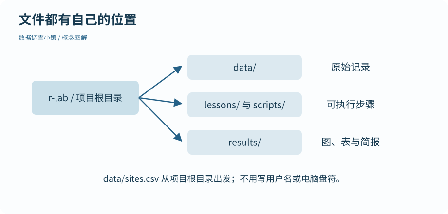

第 04 节 · 启程接待所
保存一份可以重跑的工作
明天重开电脑，今天的步骤还在吗？
建立 RStudio 项目；理解相对路径；保存并执行脚本。
本节目录
把整个工作放进同一个文件夹
从“代码与资料”下载练习 ZIP，解压得到 r-lab。保留它的目录结构，双击 r-lab.Rproj 打开项目。项目内的 data 放输入，lessons 放逐课代码，scripts 放完整流程，results 放生成结果。
项目帮助 RStudio 把这些材料放在同一个工作范围内。打开项目后，工作目录通常就是项目根目录。可用 getwd() 检查当前位置，但别把自己的绝对路径复制进教材代码。
图解 · 文件都有自己的位置

从 r-lab 项目根目录出发，用相对路径连接原始数据、脚本和输出。移动整个项目后内部路径仍成立。
放大查看 ↗ 保存 SVG ↓相对路径是一条从当前位置出发的路线
data/observations.csv 表示当前目录里的 data 子目录中的文件。它不表示“电脑上任意一个叫 observations.csv 的文件”。用 file.exists() 检查路径，比一开始就尝试各种导入参数更容易定位问题。
# 数据调查小镇 · 第 04 节
# 在 r-lab 项目根目录运行；输出只写入 results。
# 从 r-lab.Rproj 打开项目，再运行脚本；路径从项目根目录出发。
print(file.exists("data/observations.csv"))
dir.create("results", showWarnings = FALSE)
writeLines("My first reproducible note", "results/first-note.txt")
print(readLines("results/first-note.txt"))[1] TRUE [1] "My first reproducible note"
这段代码确认输入存在，再把一行文字写入 results。dir.create(..., showWarnings = FALSE) 在这里允许结果目录已经存在。用路径分隔符 / 写相对路径，可以避免把某台机器的用户名写进代码。
脚本记步骤，工作区记暂时的对象
把代码保存为 .R 文件。在 RStudio 中，可以逐行 Run，也可以点击 Source 运行整个文件；在项目控制台执行 source("lessons/04.R") 也能运行本节。完整逐课脚本包含所需输入步骤，并显式打印关键结果。
项目默认不恢复旧 .RData，退出时也不把整个工作区自动保存。这样，重启 R 后运行脚本，才能看出是否漏写了步骤。不是说 RData 文件不能用，而是隐藏在旧工作区里的对象容易让代码“只在自己电脑上成功”。
一次很有价值的检查
保存脚本，重启 R 会话，然后重新运行它。若成功生成相同文字，说明结果不依赖刚才在控制台偷偷创建的对象。每次练习都在副本上进行，原始记录保留在 data；写出结果前看一眼目标文件名，避免覆盖自己的其他工作。
动手试试
搬家后再找文件
如果把整个 r-lab 移到另一个文件夹，再从其中的项目文件打开，data/observations.csv 需要改成新绝对路径吗？
给我一点提示
相对路径取决于项目内部结构以及运行时的工作目录。
查看参考解法与解释
通常不需要。完整保留目录结构并从新位置打开项目，路径仍从项目根目录出发。若 file.exists() 为 FALSE，先用 getwd() 检查当前位置。
带走这一点
下一节继续沿地图向前。也可以先修改本节例子中的一个值，解释输出为什么变化。
检查一下理解
最有助于证明脚本没有隐藏依赖的操作是？
查看解释
重启清除本次会话中的对象，完整重跑可以暴露漏写的创建和读取步骤。